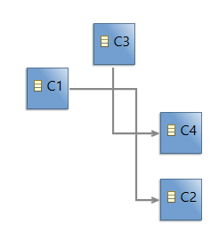
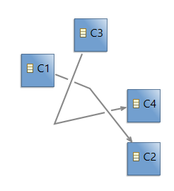
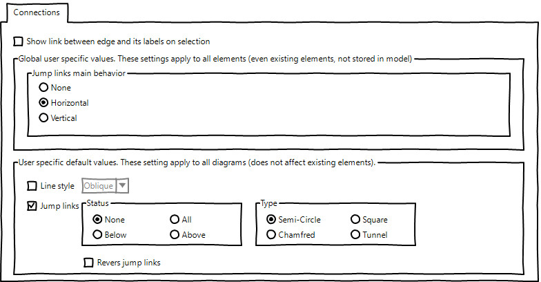

_Summary_: The evolution of bugzilla 553775 adds a new type of jump link, named "tunnel". The goal of this evolution is to continue to improve the readability of diagram having some edges crossing each other.
| Version | Status | Date | Authors | Changes | |---------|--------|------------|-----------|-------------------| | v0.1 | DRAFT | 2021-06-09 | lredor | Initial version. |
Relevant tickets(links to the Bugzilla tickets which are related to the change):
Currently, 4 status exist:
The following illustrations correspond to the effect of these values (
None,
All,
Below and
Above) on a simple diagram.

For information, the edge between C1 and C2 is below the edge between C3 and C4 and the status is applied on both edges.
The goal of this evolution is to add 2 new kind of status. These new status are particular because they no longer depends on the "z-ordering" of the edges but on the alignment of the segements of the edge.
The new status are:
The following illustrations correspond to the effect of these new values (
Horizontal and
Vertical) on the same simple diagram.
Oblique segments will be also handled. Horizontality or verticality of an oblique segment is determined according to its angle. All segment in blue sections are considered as vertical and all segment in red sections are considered as horizontal.

The following illustration corresponds to the effect of
Horizontal status on oblique edges.

Specific rules:
This Sirius evolution needs to use a new version of GMF, with a an evolution of GMF metamodel. Indeed, the values of status displayed in
Appearance tab of Properties view rely on the enumeration
org.eclipse.gmf.runtime.notation.JumpLinkStatus. A part of this evolution will be done in GMF (as for the addition of the new "Tunnel" type).
The code from
org.eclipse.gmf.runtime.draw2d.ui.figures.PolylineConnectionEx.JumpLinkSet.calculateIntersections(Connection) and
org.eclipse.gmf.runtime.draw2d.ui.figures.PolylineConnectionEx.setJumpLinksStyles(int, boolean, boolean, boolean, boolean) will be changed to consider these new statuses.
As a new version of GMF is necessary, the bugzilla
567876 will be handled on GMF side to avoid code duplication in
org.eclipse.sirius.ext.gmf.runtime.draw2d.ui.figures.SiriusPolylineConnectionEx. This class will be deleted after bugzilla 567876 resolution.
Sirius will be then adapted to benefit of this new GMF feature.
The jump links preferences, from page
org.eclipse.sirius.diagram.ui.internal.preferences.DiagramConnectionsPreferencePage will be also completed with the new status.
This feature will be available only in RCP as it is massively based on an existing GMF feature.
The GMF version used will be different so a "blank" migration participant will be add (as for example
org.eclipse.sirius.diagram.business.internal.migration.JumpLinkNewTypeMigrationParticipant). This version will not be compatible with previous version.
The API changes concern only the new jump links status.
There are two user interface changes:


This new status must be documented in the New and Noteworthy documentation.
The chapter corresponding to "Jump links" in Sirius documentation must be completed (in the section "Sirius/Sirius User Manual/Diagrams/Features Overview/Manage edges").
The result of this evolution is mainly visual. It is not possible to test it with automatic tests. Manual tests will be described.
An option in which another preference will be added, with values "None / Horizontal / Vertical", has been studied. This preference will not be stored in the model (it is specific to each user with a potential default value defined in the product). It will be prior to other Status property.
The preference page will be something like:
